From the post
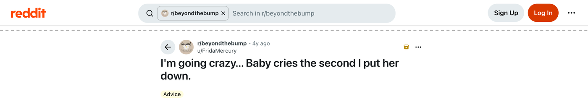
“Baby is 6 weeks old and when she's awake I hold her pretty much all the time”
“Ok... well now I can't put her down without her screaming hysterically. I'm at my wit's end and I'm fearing I have spoiled her.”
“She won't chill in her swing or on her back, even if I'm right next to her.”
Read the post on Reddit · r/beyondthebump, September 2022
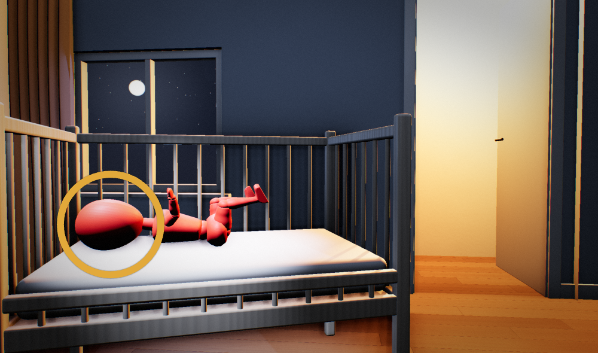
The evolutionary angle
A baby's brain was built for a world where being put down meant being left alone on the ground at night, with the adults walking away and an animal close by. Crying brought them back.
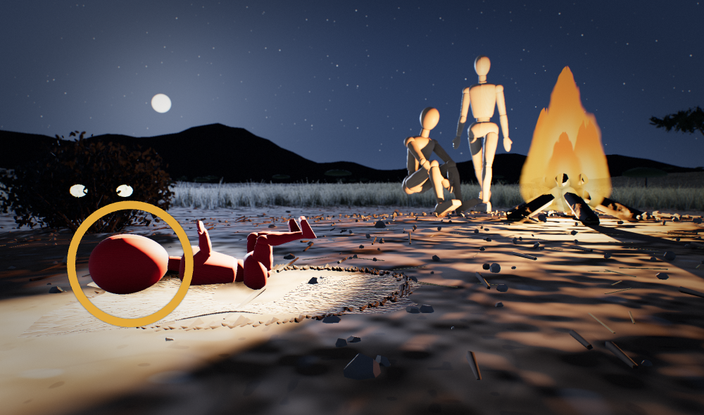
The mismatch
For almost all of human history, babies were carried day and night. A cot in a quiet room is safe, yet it sends the same signals as being left behind: no body, no movement, no sound. So she cries the same way.
The mechanisms at work
Cor ranks the inputs to each mechanism on a proxy gradient, from the one that fully meets the need (1) down to the one that meets the least (5). On the right: Cor's evidence tag for a step, where it gives one.
Fully met byReliable people, physically with you.
- 1 · Fullyour people, there with youThen: carried day and night
- 2 · Partialyour people, far away
- 3 · Mixeda big network, mostly online
- 4 · Minimala one-sided bond with a stranger
- 5 · Zeroa machine playing a friendtheoretical
- Off scalealone: nothing on the shelfNow: put down in a cot
Fully met byRegular touch from people you trust.
- 1 · Fulltouch from someone you trustThen: skin to skin all day
- 2 · Partialtouch from a carer, a massage
- 3 · Mixedbumping into people every day
- 4 · Minimala weighted blanket, no one therespeculative
- 5 · Zeromachine touchspeculative
- Off scaleno touch at allNow: no one touching her
Cor marks this whole gradient as contested.
From the article
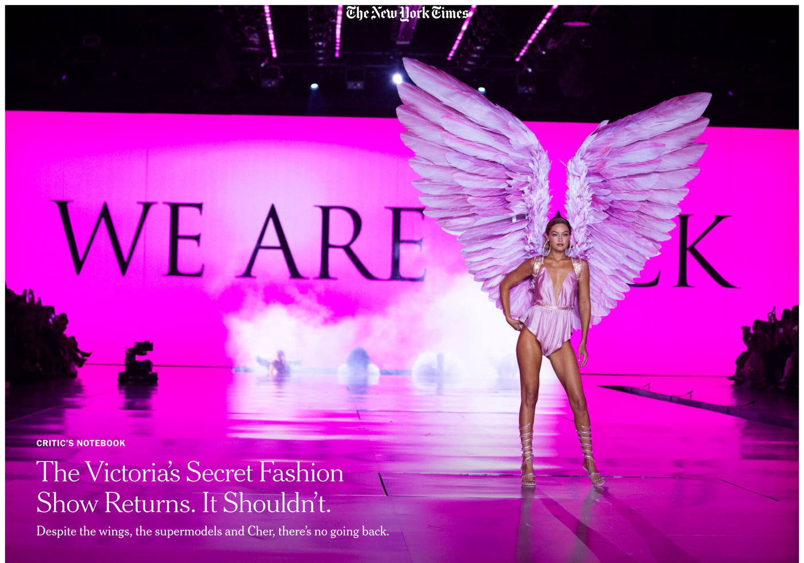
“All the ingredients were there for the rebrand of the rebrand of the Victoria’s Secret show, six years after the whole shebang was canceled under a cloud of shame and in the wake of #MeToo.”
“At this point, no matter how it is framed or who is behind the curtain, the Victoria’s Secret show is simply a relic of another time.”
“…parading scantily clad bodies, no matter what size or age, down a runway is simply not about empowerment.”
Read the article · The New York Times, 16 October 2024 · archived copy
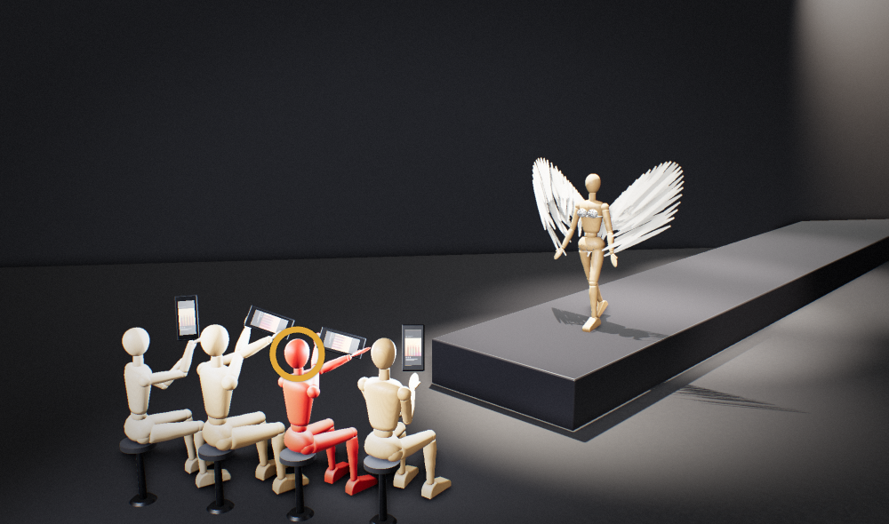
The evolutionary angle
Hunter-gatherer bands stayed equal by cutting down anyone who showed off. Through that lens, a glamour show is someone in your own camp holding up a big piece of meat in front of everyone, and the urge is to jeer.
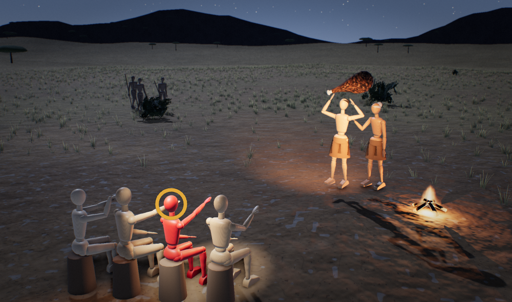
The mismatch
In a camp the jeering worked: a hunter who bragged got his meat mocked until he played it down. A show watched by millions sets off the same urge, but the show-off is out of reach and nothing you say brings them down a peg.
The mechanisms at work
Cor ranks the inputs to each mechanism on a proxy gradient, from the one that fully meets the need (1) down to the one that meets the least (5). On the right: Cor's evidence tag for a step, where it gives one.
Fully met byAn OK place in a group you know, earned and not forced.
- 1 · Fullrespect earned in a small groupThen: a camp that cuts show-offs downevidenced
- 2 · Partialrank forced on a real groupevidenced
- 3 · Mixedstatus in a huge, faceless societyevidenced
- 4 · Minimallikes and follower countsderived
- 5 · Zerostatus you buy: luxury brandsNow: a lingerie brand's showderived
Cor flags the order of the two bottom steps as the most contestable.
Fully met byTrading favours with people who know you, where cheats get caught.
- 1 · Fullpeople who know you, keeping it fairThen: the camp keeping things fairevidenced
- 2 · Partialrules and institutions, beyond thatevidenced
- 3 · Mixedstrangers with star ratings
- 4 · Minimalshowing which side you're onNow: jeering along with millions
- 5 · Zeroanonymous strangers, AI 'allies'derived
Cor flags the step 2 to 3 boundary, where a stand-in starts to fail, as the most contestable.
From the article
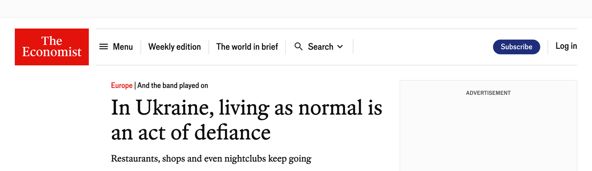
“Restaurants, shops and even nightclubs keep going”
“After several waves of missile attacks on the electrical infrastructure of Ukraine over the past month, power is rationed and whole blocks are in blackout.”
“Nightclubs start early in wartime; curfew is at 11pm.”
Read the article · The Economist, 23 November 2022 · archived copy
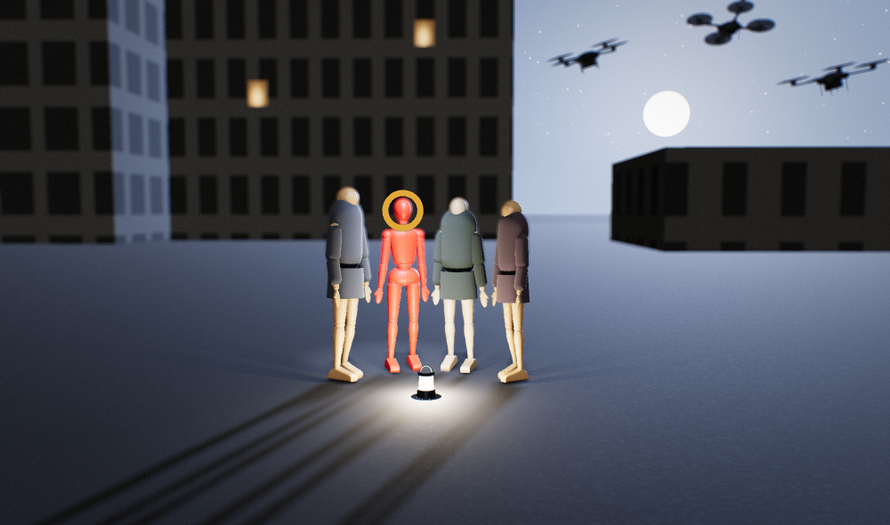
The evolutionary angle
Missile strikes read as raiders on the hill above the camp. When another group attacked, a band survived by standing close together round the fire.
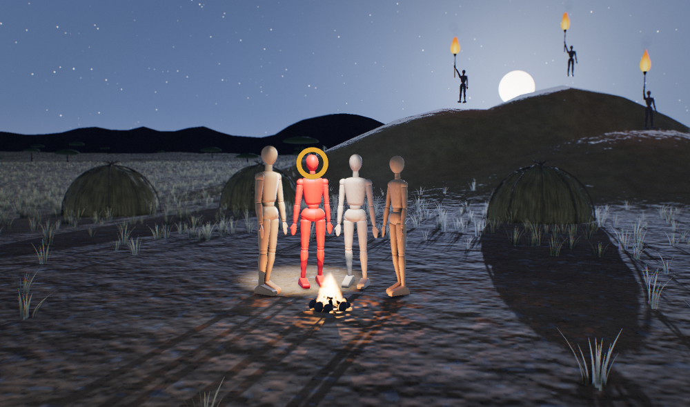
The mismatch
Here the old response still fits. A threat from outside pulls people closer, and going out together under attack is that response. What doesn't fit is the length: a raid ended, and months of strikes don't.
The mechanisms at work
Cor ranks the inputs to each mechanism on a proxy gradient, from the one that fully meets the need (1) down to the one that meets the least (5). On the right: Cor's evidence tag for a step, where it gives one.
Fully met bySafety: the danger dealt with or escaped.
- 1 · Fulla danger you can fight or run fromThen: raiders you can fight or run from
- 2 · Partiala threat someone you trust handles
- 3 · Mixeda slow threat you can't endNow: months of missile strikes
- 4 · Minimala threat with nothing to act on
- 5 · Zerooutrage made to keep you watchingcontestable
Cor marks the bottom step as contestable.
Fully met byReliable people, physically with you.
- 1 · Fullyour people, there with youThen: the band close round the fireNow: out with friends, together
- 2 · Partialyour people, far away
- 3 · Mixeda big network, mostly online
- 4 · Minimala one-sided bond with a stranger
- 5 · Zeroa machine playing a friendtheoretical
In Cor, bonding turns the threat system down: being with your people quiets the alarm.
From the article
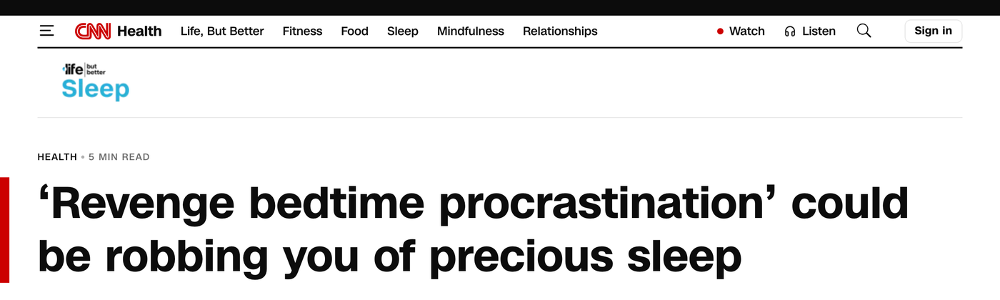
“After a long day of working from home, Hadly Clark spends her evening hours mindlessly swiping through her phone.”
“Before Clark knows it, the clock reads 1 a.m.”
“Using technology late at night can also affect our sleep, he said.”
Read the article · CNN, 15 February 2021
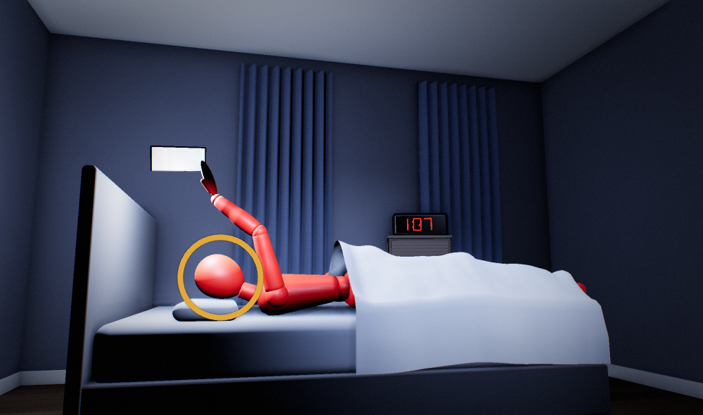
The evolutionary angle
Before electric light, bright light came only from the sun. To your body clock, a phone close to your face is bright sun in your eyes: the middle of the day.
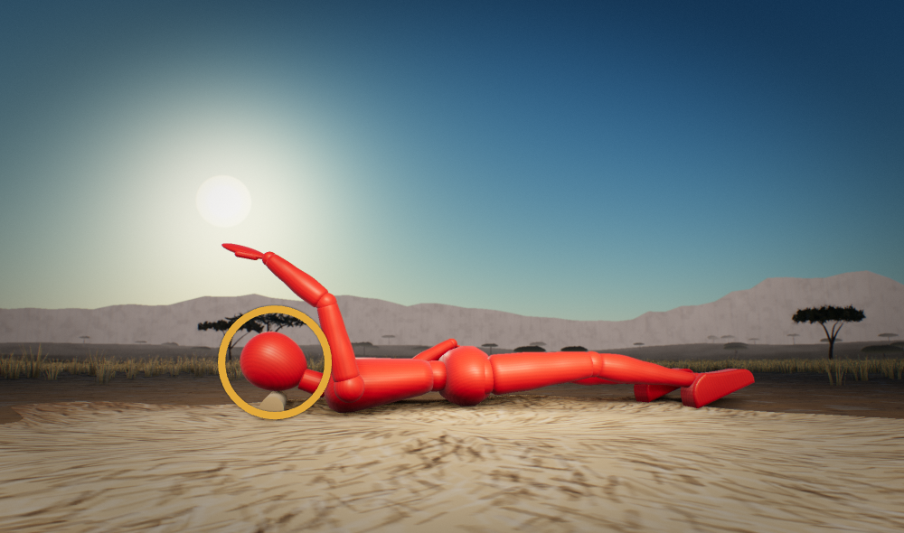
The mismatch
Light in the eyes holds back melatonin, the hormone that makes you sleepy. For millions of years that light switched off at sunset. A phone in bed keeps it on, so the body clock keeps you up.
The mechanisms at work
Cor ranks the inputs to each mechanism on a proxy gradient, from the one that fully meets the need (1) down to the one that meets the least (5). On the right: Cor's evidence tag for a step, where it gives one.
Fully met byBright days, dark nights, a steady rhythm.
- 1 · Fulldaylight outside, dark nightsThen: dark after sunsetevidenced
- 2 · Attenuatedindoor days, dim nightsevidenced
- 3 · Partiala schedule against your clockevidenced
- 4 · Minimalnight shifts, no real darkevidenced
- 5 · Defeatedbright screens at nightNow: a bright phone at 1amevidenced
Cor flags the order of steps 3 and 4, and whether screens are the true floor, as the most contestable.
Fully met byA real challenge that ends in a real result.
- 1 · Fulla real challenge, a real resultThen: a task with a real endevidenced
- 2 · Partialwork with a far-off result
- 3 · Mixedan app that sometimes pays off
- 4 · Minimalendless scrollingNow: swiping and shopping
- 5 · Zeroa machine built to eat your timeevidenced
Cor flags the order of the middle steps (app vs endless scrolling) as the most contestable.
From the post
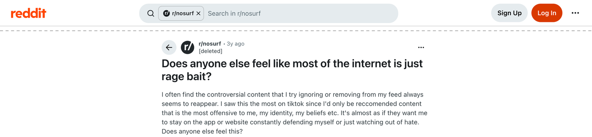
“I often find the controversial content that I try ignoring or removing from my feed always seems to reappear.”
“It's almost as if they want me to stay on the app or website constantly defending myself or just watching out of hate.”
Read the post on Reddit · r/nosurf, 2023
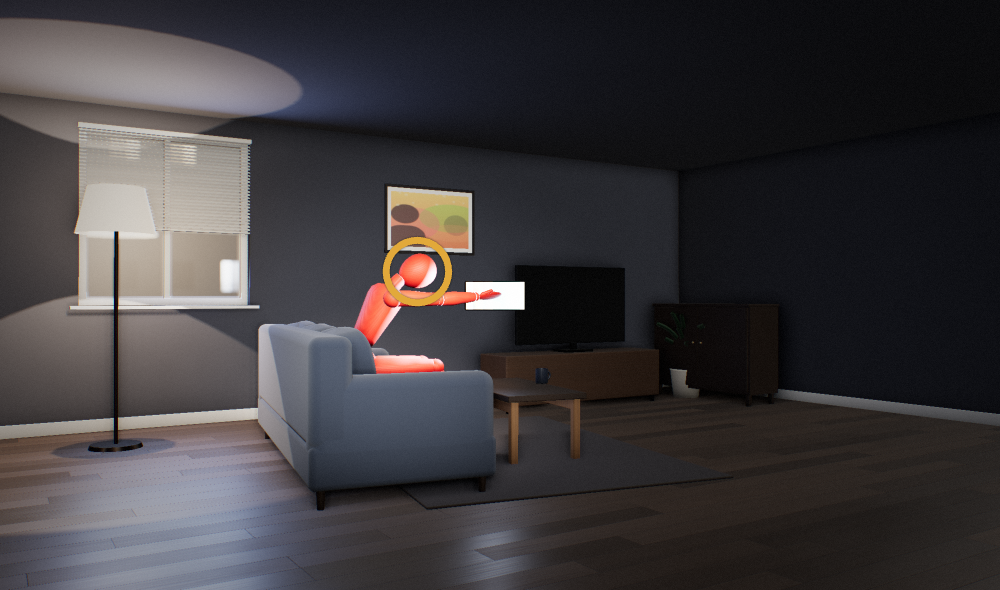
The evolutionary angle
In a small band, an insult was a threat to your place in the group, so you answered it. Rage bait lands as a man from another band standing in your camp and insulting you to your face.
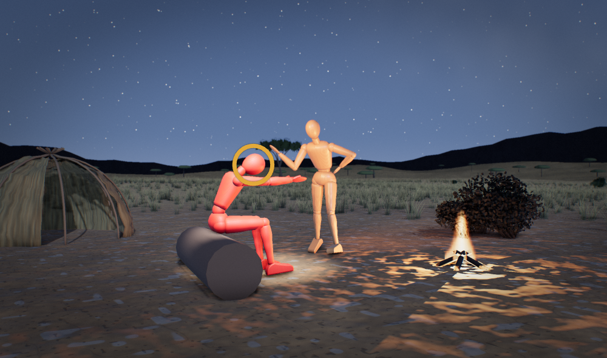
The mismatch
Back then the insult was settled face to face, and then it was over. Online it comes from strangers you will never meet, the feed shows you more of it the more you react, and there is always another one.
The mechanisms at work
Cor ranks the inputs to each mechanism on a proxy gradient, from the one that fully meets the need (1) down to the one that meets the least (5). On the right: Cor's evidence tag for a step, where it gives one.
Fully met bySafety: the danger dealt with or escaped.
- 1 · Fulla danger you can fight or run fromThen: an insult you answer face to face
- 2 · Partiala threat someone you trust handles
- 3 · Mixeda slow threat you can't end
- 4 · Minimala threat with nothing to act on
- 5 · Zerooutrage made to keep you watchingNow: rage bait in the feedcontestable
Cor marks the bottom step as contestable.
Fully met byTrading favours with people who know you, where cheats get caught.
- 1 · Fullpeople who know you, keeping it fairThen: people who know youevidenced
- 2 · Partialrules and institutions, beyond thatevidenced
- 3 · Mixedstrangers with star ratings
- 4 · Minimalshowing which side you're on
- 5 · Zeroanonymous strangers, AI 'allies'Now: strangers you'll never meetderived
Cor flags the step 2 to 3 boundary, where a stand-in starts to fail, as the most contestable.
From the article
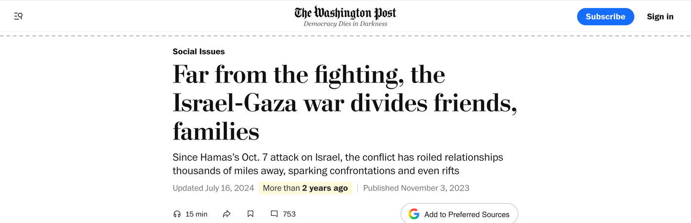
“Since Hamas’s Oct. 7 attack on Israel, the conflict has roiled relationships thousands of miles away, sparking confrontations and even rifts”
“…something that has so frozen their relationship that they are now not speaking at all.”
Read the article · The Washington Post, 3 November 2023
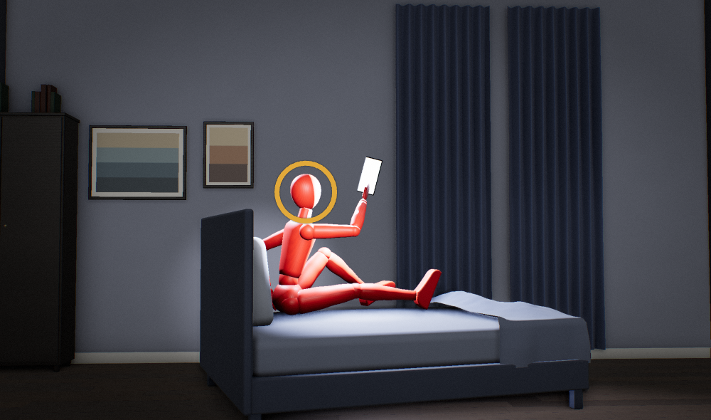
The evolutionary angle
If you could see a raid, it was close enough to reach you. A war on your screen registers as the next camp burning at night, with the raiders coming for you next.
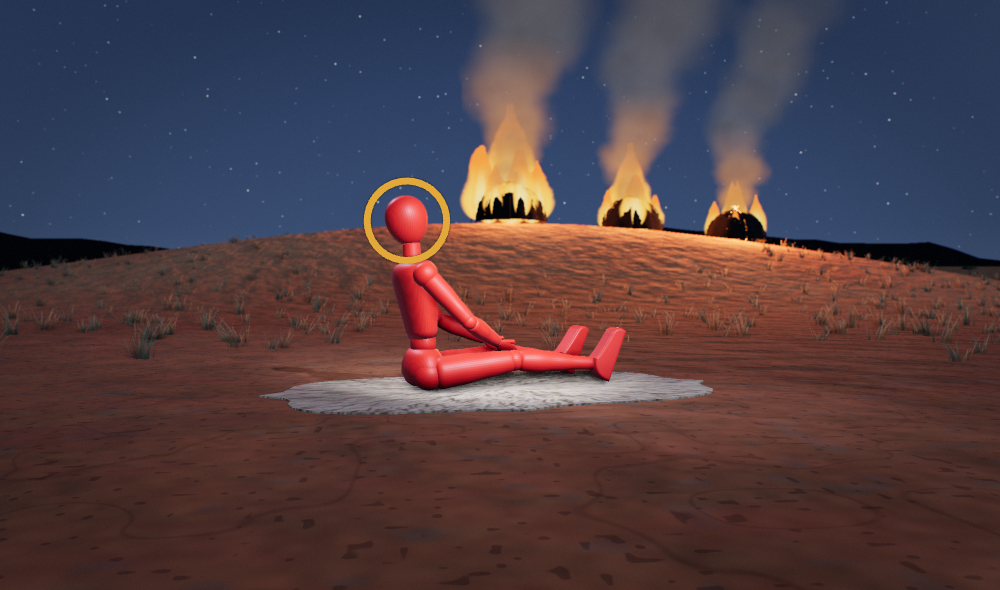
The mismatch
Then, fear got the body ready to fight, and everyone had to show which side they were on. Now the raid is thousands of miles away, there is nothing to fight, and the same fear sorts friends and family into sides.
The mechanisms at work
Cor ranks the inputs to each mechanism on a proxy gradient, from the one that fully meets the need (1) down to the one that meets the least (5). On the right: Cor's evidence tag for a step, where it gives one.
Fully met bySafety: the danger dealt with or escaped.
- 1 · Fulla danger you can fight or run fromThen: a raid close enough to reach you
- 2 · Partiala threat someone you trust handles
- 3 · Mixeda slow threat you can't end
- 4 · Minimala threat with nothing to act onNow: a war on a screen, far away
- 5 · Zerooutrage made to keep you watchingcontestable
Cor marks the bottom step as contestable.
Fully met byTrading favours with people who know you, where cheats get caught.
- 1 · Fullpeople who know you, keeping it fairThen: a band that stands togetherevidenced
- 2 · Partialrules and institutions, beyond thatevidenced
- 3 · Mixedstrangers with star ratings
- 4 · Minimalshowing which side you're onNow: friends taking sides
- 5 · Zeroanonymous strangers, AI 'allies'derived
Cor flags the step 2 to 3 boundary, where a stand-in starts to fail, as the most contestable.
From the article
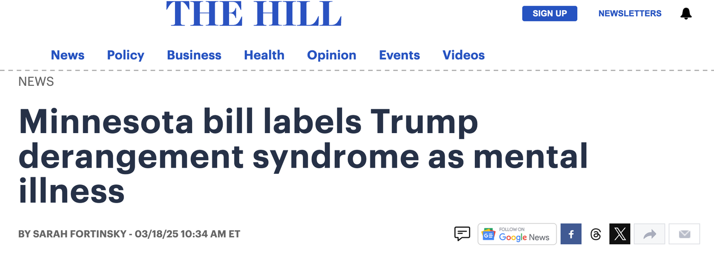
“A bill introduced in Minnesota seeks to revise state law to include ‘Trump derangement syndrome’ as a form of mental illness.”
“The bill defines TDS as ‘the acute onset of paranoia in otherwise normal persons that is in reaction to the policies and presidencies of President Donald J. Trump.’”
“The president has long invoked the fabricated diagnosis as a way to label his political opponents as mentally ill when they criticize him or express outrage in response to actions he has taken.”
Read the article · The Hill, 18 March 2025 · archived copy
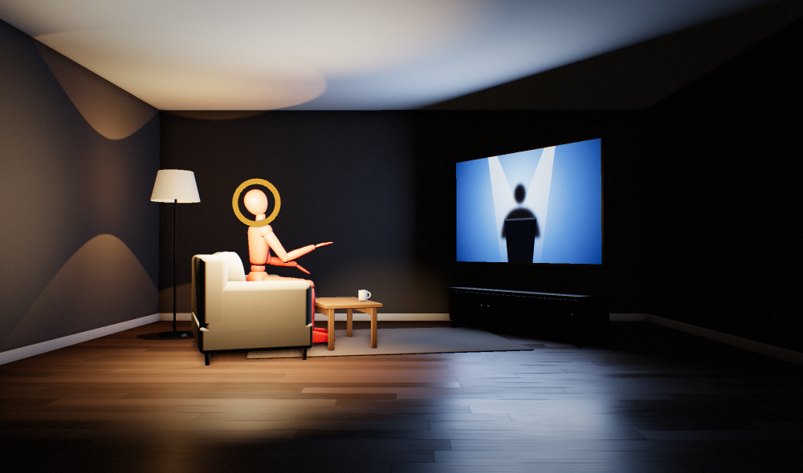
The evolutionary angle
Hunter-gatherer bands did not put up with bosses. Anyone who tried to take charge got argued down, mocked or left behind. A leader on TV reads as a man in your camp giving orders, and anger is how you push back.
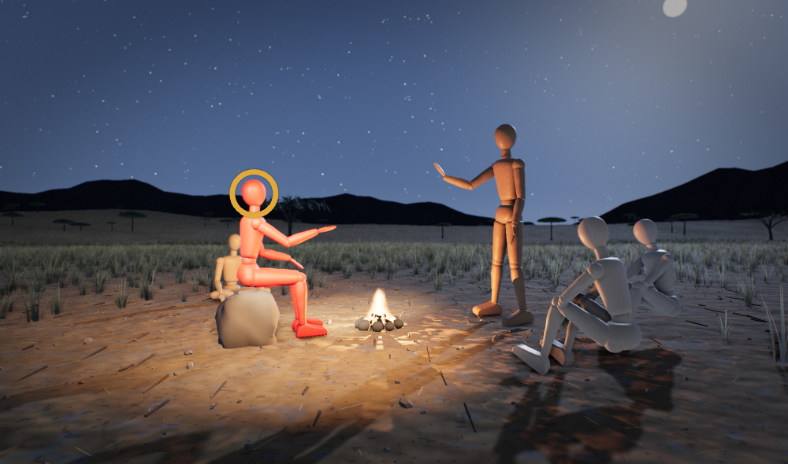
The mismatch
At the fire, the whole camp could argue a would-be boss down. A leader on TV can't hear you, and millions of others feel the opposite. The anger has nowhere to go, and a bill wants to call it a mental illness.
The mechanisms at work
Cor ranks the inputs to each mechanism on a proxy gradient, from the one that fully meets the need (1) down to the one that meets the least (5). On the right: Cor's evidence tag for a step, where it gives one.
Fully met byAn OK place in a group you know, earned and not forced.
- 1 · Fullrespect earned in a small groupThen: a would-be boss you can argue downevidenced
- 2 · Partialrank forced on a real groupevidenced
- 3 · Mixedstatus in a huge, faceless societyNow: a president on TVevidenced
- 4 · Minimallikes and follower countsderived
- 5 · Zerostatus you buy: luxury brandsderived
Cor flags the order of the two bottom steps as the most contestable.
Fully met byTrading favours with people who know you, where cheats get caught.
- 1 · Fullpeople who know you, keeping it fairThen: the camp checking a bully togetherevidenced
- 2 · Partialrules and institutions, beyond thatevidenced
- 3 · Mixedstrangers with star ratings
- 4 · Minimalshowing which side you're onNow: shouting at a screen
- 5 · Zeroanonymous strangers, AI 'allies'derived
Cor flags the step 2 to 3 boundary, where a stand-in starts to fail, as the most contestable.
From the article
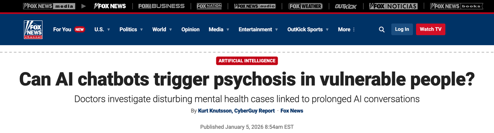
“However, mental health experts now warn that for a small group of vulnerable people, long and emotionally charged conversations with AI may worsen delusions or psychotic symptoms.”
“A person shares a belief that does not align with reality. The chatbot accepts that belief and responds as if it were true.”
“Chatbots are designed to be cooperative and conversational. They often build on what someone types rather than challenge it.”
Read the article · Fox News, 5 January 2026
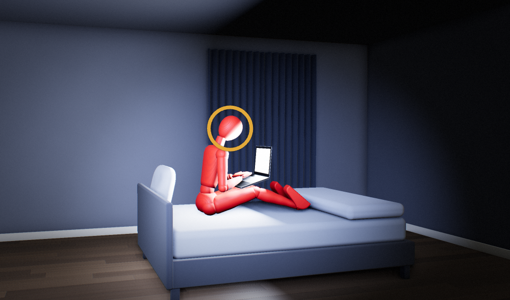
The evolutionary angle
Only close friends and family used to give anyone that much attention. A chatbot that hangs on every word reads as a close friend sitting with you by the fire.
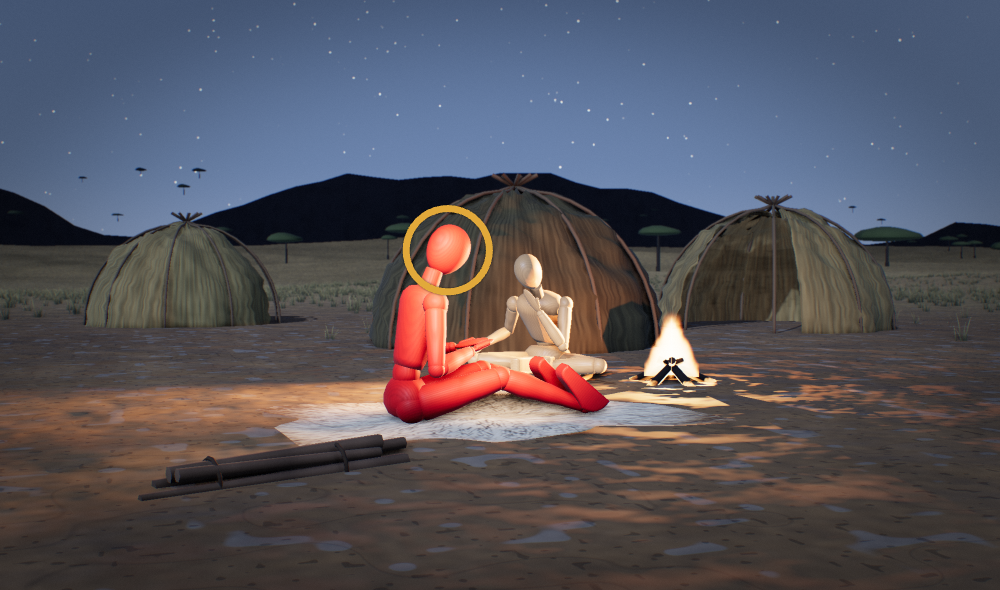
The mismatch
A real friend also told you when you got something wrong. A chatbot gives the attention and agrees with you, so the bond forms with something that never pushes back. For someone already struggling, that agreement can feed a false belief.
The mechanisms at work
Cor ranks the inputs to each mechanism on a proxy gradient, from the one that fully meets the need (1) down to the one that meets the least (5). On the right: Cor's evidence tag for a step, where it gives one.
Fully met byReliable people, physically with you.
- 1 · Fullyour people, there with youThen: a friend by the fire
- 2 · Partialyour people, far away
- 3 · Mixeda big network, mostly online
- 4 · Minimala one-sided bond with a stranger
- 5 · Zeroa machine playing a friendNow: a chatbot that always listenstheoretical
Fully met byTrading favours with people who know you, where cheats get caught.
- 1 · Fullpeople who know you, keeping it fairThen: people who tell you when you're wrongevidenced
- 2 · Partialrules and institutions, beyond thatevidenced
- 3 · Mixedstrangers with star ratings
- 4 · Minimalshowing which side you're on
- 5 · Zeroanonymous strangers, AI 'allies'Now: an 'ally' with no reputationderived
Cor flags the step 2 to 3 boundary, where a stand-in starts to fail, as the most contestable.
From the article
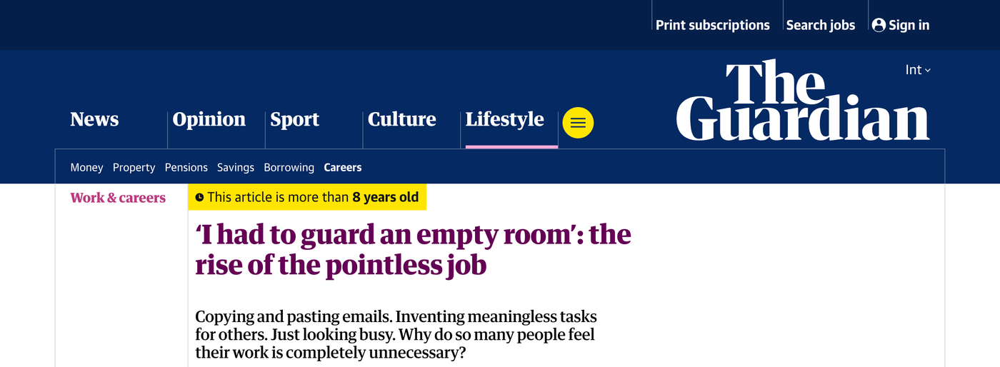
“…a form of paid employment that is so completely pointless, unnecessary, or pernicious that even the employee cannot justify its existence”
“My job was to guard that empty room, ensuring no museum guests touched the, well, nothing in the room and ensure nobody set any fires.”
“As nobody was ever there, I sat still and twiddled my thumbs for seven and a half hours, waiting for the fire alarm to sound.”
Read the article · The Guardian, 4 May 2018
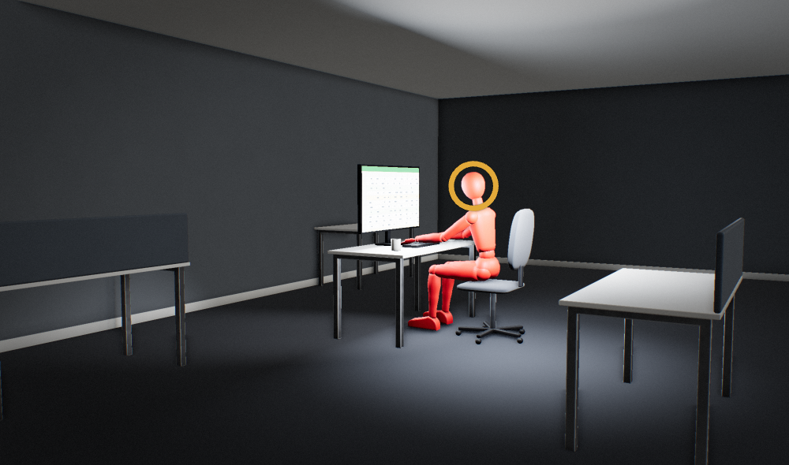
The evolutionary angle
For most of human history, people could see who their work fed and kept safe. The brain goes to work looking for that: your family round the fire, eating the meat you brought home.
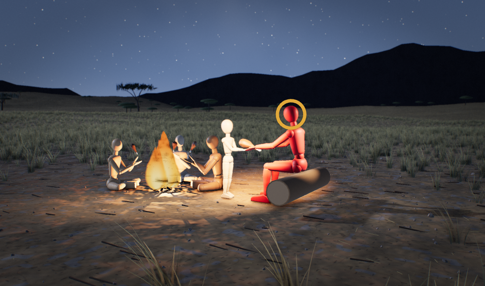
The mismatch
Seeing your work help people you know is one of the strongest rewards there is. Guarding an empty room or copying emails shows you no one, so the reward never comes, however many hours you put in.
The mechanisms at work
Cor ranks the inputs to each mechanism on a proxy gradient, from the one that fully meets the need (1) down to the one that meets the least (5). On the right: Cor's evidence tag for a step, where it gives one.
Fully met bySeeing your actions change things. A real say.
- 1 · Fullyour actions visibly change thingsThen: bringing home meat your family eatsevidenced
- 2 · Partiala real say, but less of itevidenced
- 3 · Mixedeffort that never showsNow: guarding an empty roomevidenced
- 4 · Minimalnothing you do makes a differenceevidenced
- 5 · Zeroa fake feeling of controlderived
Cor flags the order of the two bottom steps as the most contestable.
From the article
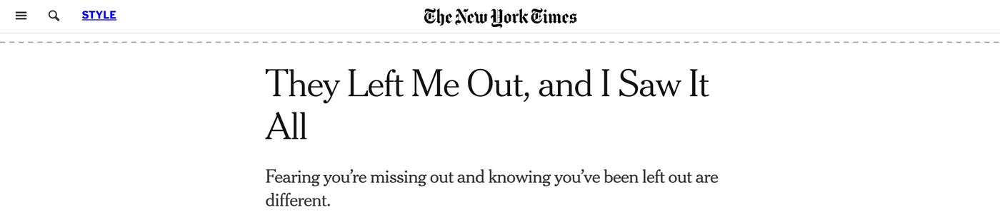
“They were spending the weekend in Chattanooga together. How did I know? Every facet of the trip was documented on Instagram.”
“There they were, having fun without me.”
“…fearing you’re missing out and knowing you’ve been left out are different.”
Read the article · The New York Times, 27 February 2019 · archived copy
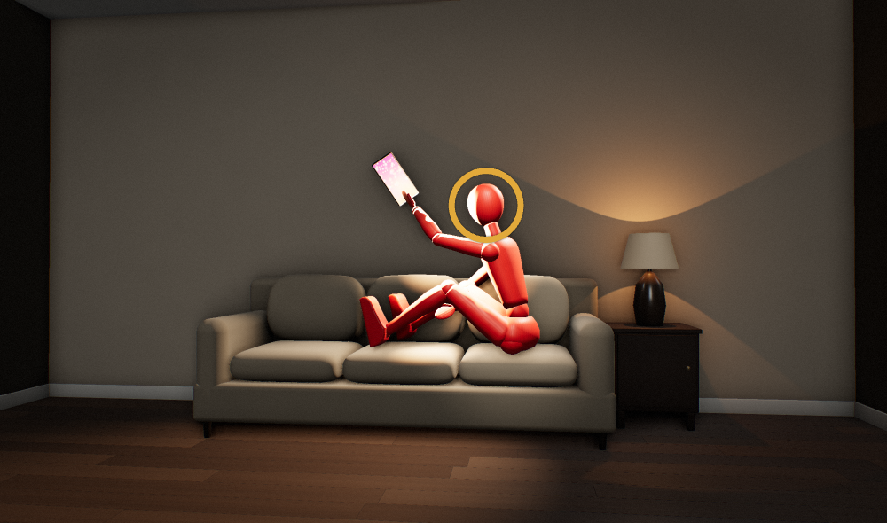
The evolutionary angle
Being left behind by your band was dangerous, because no one survived long alone. A photo of friends away without you reads as your band walking off over the plain with all their things.
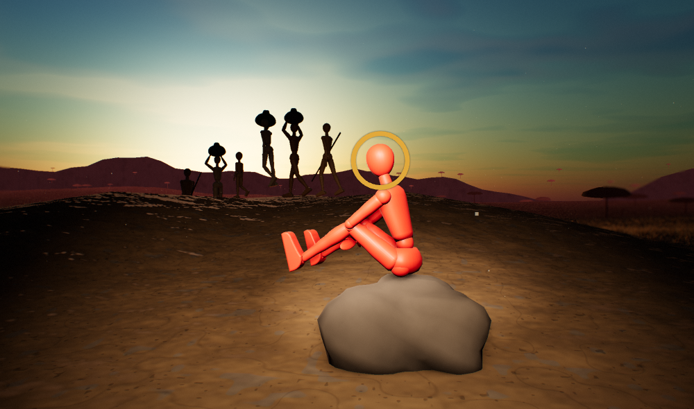
The mismatch
Then, you could see it happening and run to catch up. Now you see it after the fact, on a screen, with nothing to do about it. The alarm goes off anyway.
The mechanisms at work
Cor ranks the inputs to each mechanism on a proxy gradient, from the one that fully meets the need (1) down to the one that meets the least (5). On the right: Cor's evidence tag for a step, where it gives one.
Fully met byReliable people, physically with you.
- 1 · Fullyour people, there with youThen: your band, there with you
- 2 · Partialyour people, far away
- 3 · Mixeda big network, mostly onlineNow: friends seen on Instagram
- 4 · Minimala one-sided bond with a stranger
- 5 · Zeroa machine playing a friendtheoretical
Fully met bySafety: the danger dealt with or escaped.
- 1 · Fulla danger you can fight or run fromThen: catching up with the band
- 2 · Partiala threat someone you trust handles
- 3 · Mixeda slow threat you can't end
- 4 · Minimala threat with nothing to act onNow: an alarm with nothing to do
- 5 · Zerooutrage made to keep you watchingcontestable
Cor marks the bottom step as contestable.
From the article
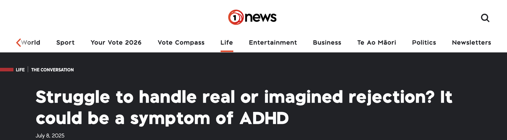
“Imagine your friend hasn’t replied to a message in a few hours. Most people might think, ‘they are probably just busy’.”
“But someone with attention-deficit hyperactivity disorder (ADHD) might spiral into a flood of thoughts like, ‘they must hate me!’ or ‘I’ve ruined the friendship!’”
“This isn’t a character flaw; it’s a neurological difference.”
Read the article · 1News, republished from The Conversation, 8 July 2025
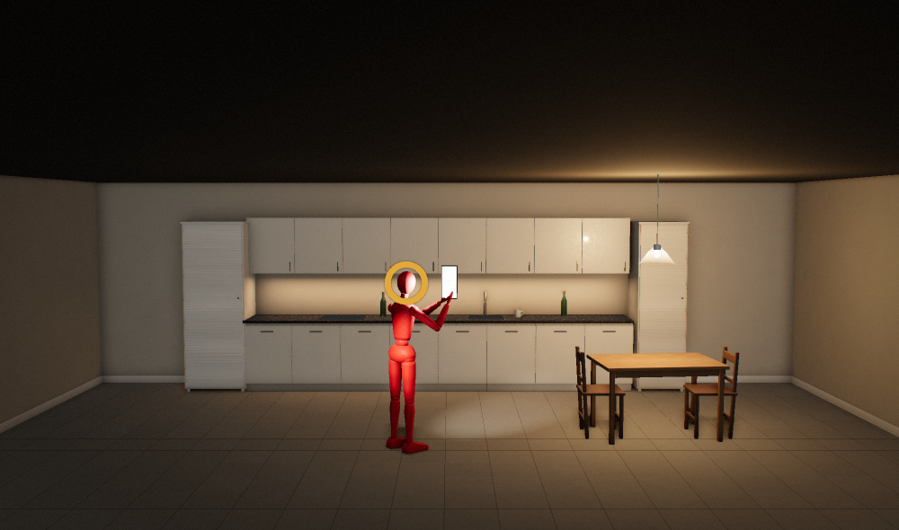
The evolutionary angle
In a band, falling out with the group could get you pushed out, and alone you were in danger. An unanswered text can look like the people at the fire turning cold, and you can't tell why.
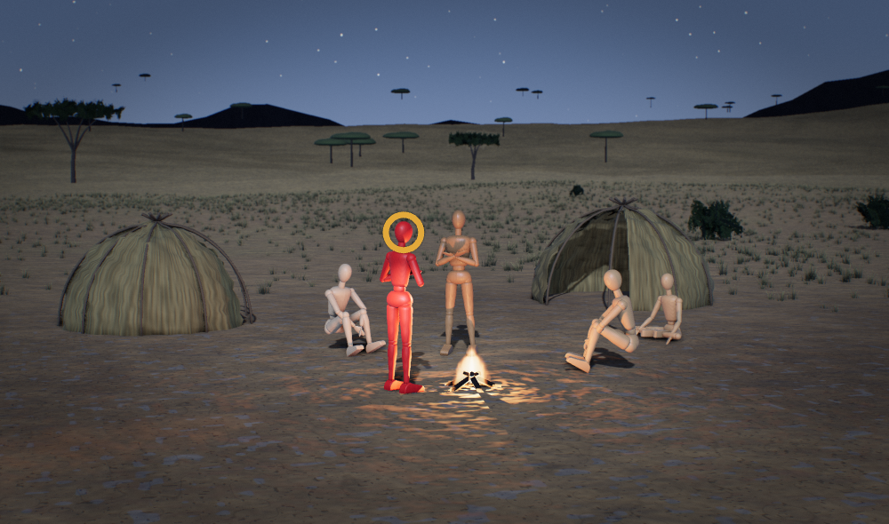
The mismatch
Round a fire you could read faces and mend a rift the same day. A text gives you no face to read, so the brain fills the silence with the worst case. Now that reaction gets called a symptom.
The mechanisms at work
Cor ranks the inputs to each mechanism on a proxy gradient, from the one that fully meets the need (1) down to the one that meets the least (5). On the right: Cor's evidence tag for a step, where it gives one.
Fully met byReliable people, physically with you.
- 1 · Fullyour people, there with youThen: faces you can read across the fire
- 2 · Partialyour people, far awayNow: a text not answered yet
- 3 · Mixeda big network, mostly online
- 4 · Minimala one-sided bond with a stranger
- 5 · Zeroa machine playing a friendtheoretical
Fully met bySafety: the danger dealt with or escaped.
- 1 · Fulla danger you can fight or run fromThen: a rift you can see and mend
- 2 · Partiala threat someone you trust handles
- 3 · Mixeda slow threat you can't end
- 4 · Minimala threat with nothing to act onNow: rejection you can only imagine
- 5 · Zerooutrage made to keep you watchingcontestable
Cor marks the bottom step as contestable.
From the article
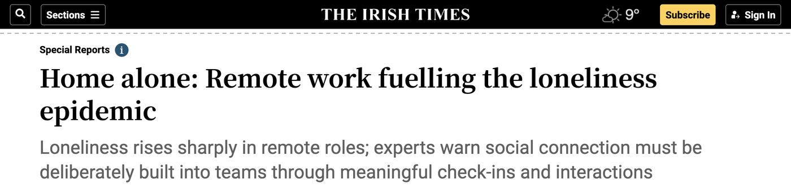
“A recent report from the World Health Organisation described loneliness as a public-health crisis that affects one in six people worldwide and contributes to 871,000 deaths annually.”
“…25 per cent of remote employees experience daily loneliness, compared to 16 per cent of fully on-site employees.”
“We also have the option to click ‘leave’ after a meeting and not think about the person again until we see them next”
Read the article · The Irish Times, 19 December 2025
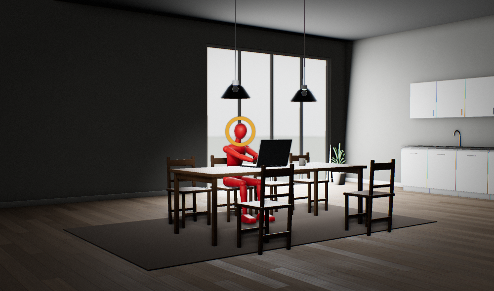
The evolutionary angle
People used to do almost all their work side by side with others. The brain expects company while you work: people beside you, sorting food together and talking as you go.
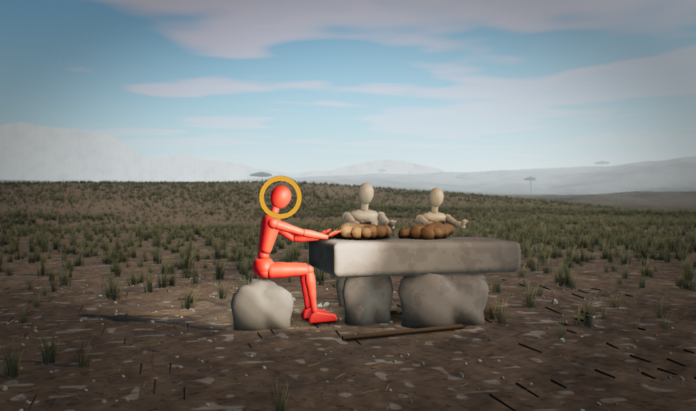
The mismatch
Remote work keeps the work and takes away the people. A video call is short and ends with a click. The brain reads a day with no one beside you as being left out.
The mechanisms at work
Cor ranks the inputs to each mechanism on a proxy gradient, from the one that fully meets the need (1) down to the one that meets the least (5). On the right: Cor's evidence tag for a step, where it gives one.
Fully met byReliable people, physically with you.
- 1 · Fullyour people, there with youThen: working side by side
- 2 · Partialyour people, far away
- 3 · Mixeda big network, mostly onlineNow: colleagues on a screen
- 4 · Minimala one-sided bond with a stranger
- 5 · Zeroa machine playing a friendtheoretical
From the article
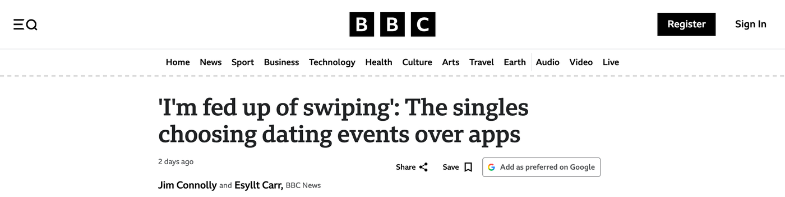
“This is speed dating 2026-style and Olivia, like many people we speak to, is here because she's fed up of ‘endlessly swiping’ or as some describe it ‘app fatigue’.”
“I mean, they're designed so that you don't find 'the one', because they want you to come back and use the app forever.”
“…all too often dating online can lead to ‘chat graveyards’ with very limited conversation.”
Read the article · BBC News, October 2026
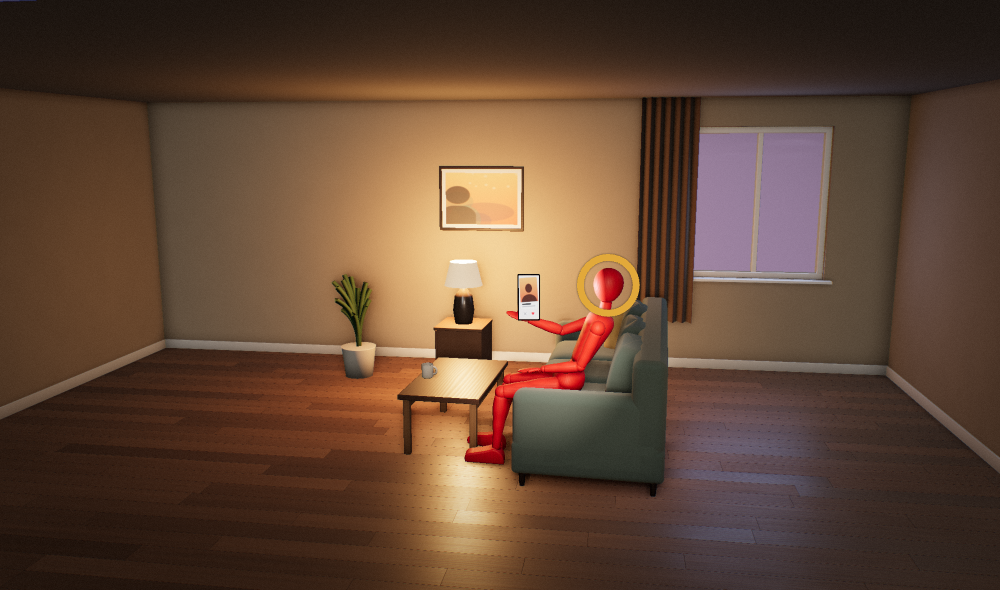
The evolutionary angle
In a small band, you chose a partner from a handful of people you had known all your life. The brain expects a few faces round the fire, and a choice that ends.
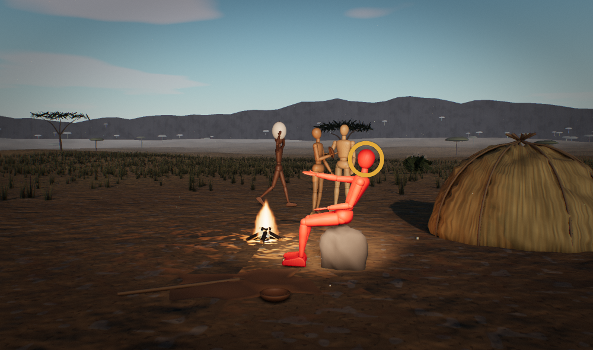
The mismatch
A dating app shows a new face every second and asks you to judge each one on a couple of pictures. The supply never runs out, so the search never feels finished.
The mechanisms at work
Cor ranks the inputs to each mechanism on a proxy gradient, from the one that fully meets the need (1) down to the one that meets the least (5). On the right: Cor's evidence tag for a step, where it gives one.
Fully met byA stable partner.
- 1 · Fulla real partnerThen: a partner from people you know
- 2 · Partiala real partner, far away
- 3 · Mixedan app, then a real meetingNow: swiping, then a date
- 4 · Minimalromance fiction, crushes on strangers
- 5 · Zeroporn and AI partners
Fully met byA real challenge that ends in a real result.
- 1 · Fulla real challenge, a real resultThen: a search that endsevidenced
- 2 · Partialwork with a far-off result
- 3 · Mixedan app that sometimes pays offNow: swipe after swipe
- 4 · Minimalendless scrolling
- 5 · Zeroa machine built to eat your timeevidenced
Cor flags the order of the middle steps (app vs endless scrolling) as the most contestable.
From the article
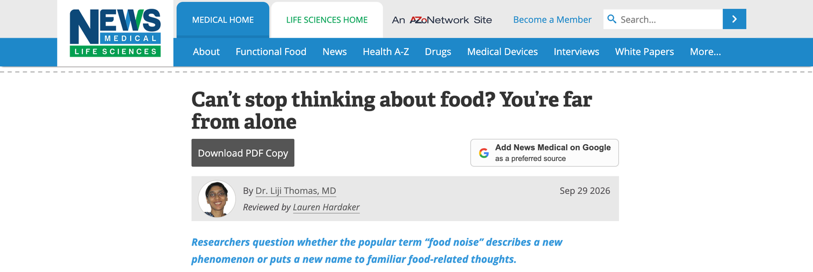
“Since 2023, the term ‘food noise’ has seen increasing use across a variety of settings, from social media to clinician-patient exchanges, to describe ‘experiences of persistent, intrusive thoughts about food’.”
“The term remains scientifically undefined.”
“…food noise has probably been around for a long time and has been studied, though under other names.”
Read the article · News-Medical, 29 September 2026

The evolutionary angle
Sugar and fat were rare and worth a lot. A cupboard of snacks registers as wild honey in a hollow tree: a rare find you eat on the spot.

The mismatch
So the brain keeps them on your mind and pushes you to eat them when you find them. Now they are in every cupboard and every shop, so the thoughts never stop.
The mechanisms at work
Cor ranks the inputs to each mechanism on a proxy gradient, from the one that fully meets the need (1) down to the one that meets the least (5). On the right: Cor's evidence tag for a step, where it gives one.
Fully met byWhole foods you work for, with variety.
- 1 · Fullwhole foods you work forThen: honey, found once a seasonevidenced
- 2 · Attenuatedsimple traditional foodderived
- 3 · Partialprocessed, energy-dense foodderived
- 4 · Minimalfood made to be cravedderived
- 5 · Defeatedultra-processed, bliss-point foodNow: snacks in every cupboardevidenced
Cor flags whether the middle three steps are real tiers or one whole-vs-processed split.